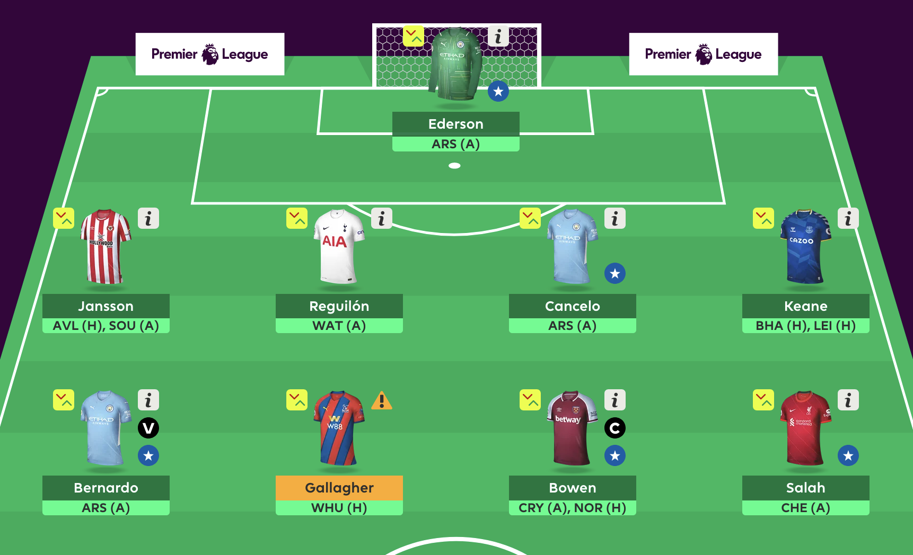
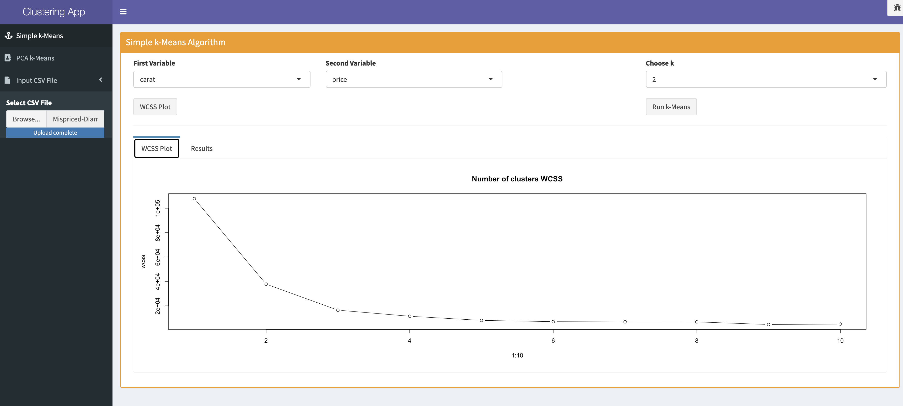
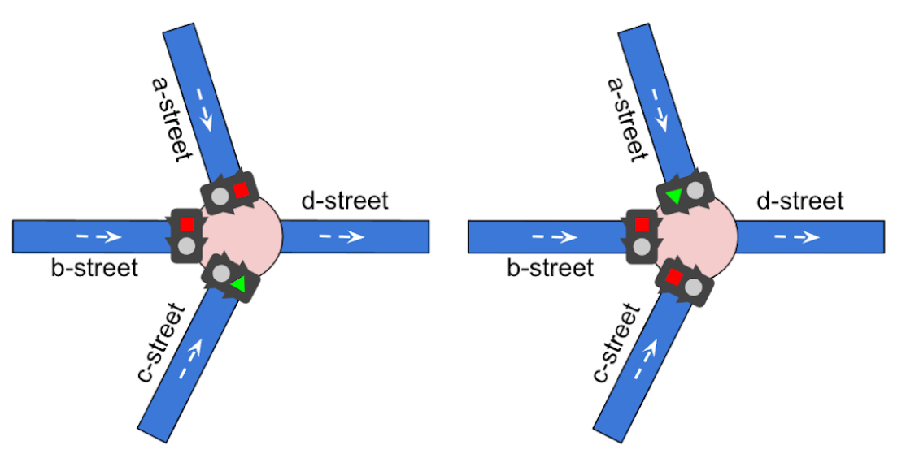
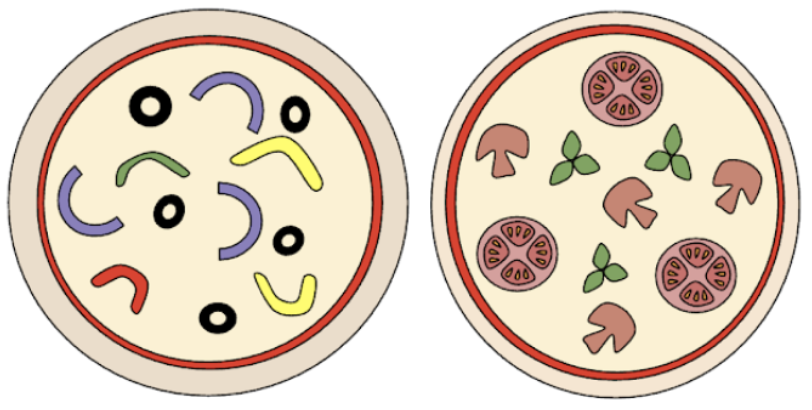
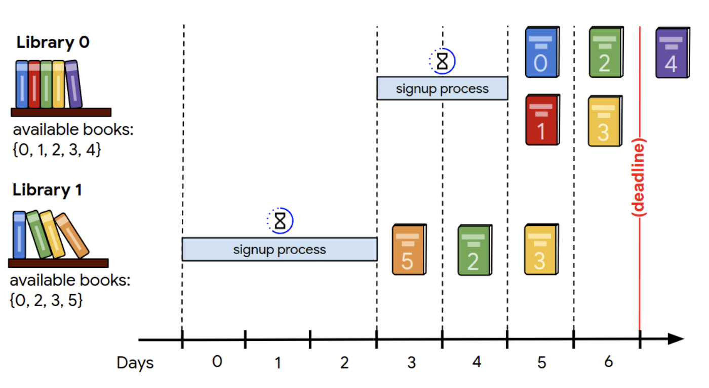
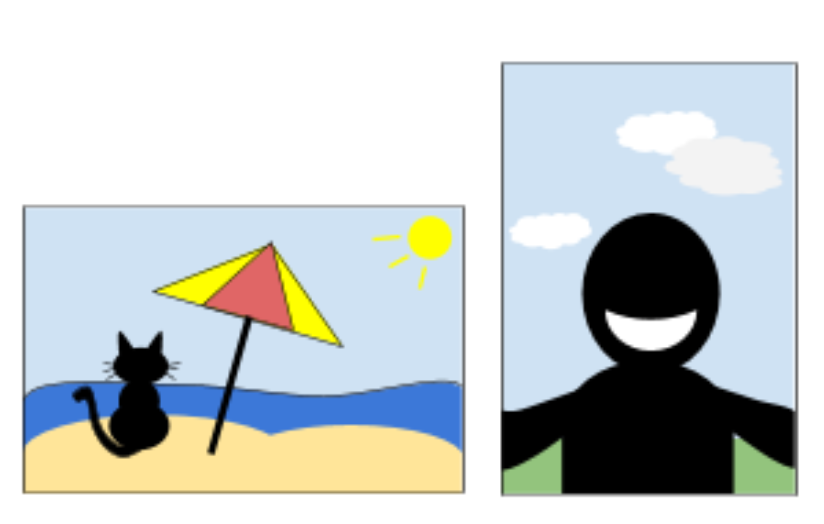

My name is Matthaios Letsios and I have 5 years of working experience in the field of Data Engineering and Data Science. In the past I have worked extensively with python, SQL and git. List of my responsibilities in my previous roles have been to:
Previously I also worked as a researcher in Telecom ParisTech & Universite Pierre Marie Curie.
I'm also proud of being co-author to the following publications:

understat.com is a website providing advanced data for football matches e.g. xGoals, xAssists, xGChain etc. In this project I set up an airflow instance to collect the data for the Premier League football matches, transform them and then in the end visualize them in a jupyter notebook. The motivation behind this is the Fantasy Premier League game, where I use those data as a basis for the weekly player selection.
The goal of this project was to setup a simple kafka example. Let's say we are in an organization where we want to be able to track down Distributed-Denial-of-Service attacks, i.e. an overflow of requests from a pool of IPs. We decide to create a kafka topic where a service will post the received IPs in real time (kafka producer) and another service will consume those messages (kafka consumer) to be able to determine whether the system is under a DDoS attack.
This is a project part of the Data Structures course during my bachelor studies. The goal is to build a java program that simulates a LRU Cache Memory, where all read and write operations are done as fast as possible. For this purpose, a data structure was designed that uses a hashtable with separate chaining and a linked list and achieves to do all operations in constant time.

This is a basic R-shiny app that uses the shiny dashboard widget and applies the k-means clustering algorithm to a given dataset.

Problem: Given a city plan and all car itineraries in that city, the goal is to schedule all traffic lights, to help as many cars as possible to reach their destination on time.
Approach: Our solution takes into account the in & out degree of each traffic light and assigns proportinally the time to each traffic light. Also we find out that assigning to all
traffic lights 1 second of traffic time provided efficient solutions in some instances. This solution allowed us to reach top 20% of the leaderboard during the competition.

Problem: Given a list of pizzas with their ingredients, the goal is to deliver pizzas to teams such that the number of distinct ingredients is maximized across all teams.
Approach: For this problem we implemented a randomized approach, along with a heuristic that expands a solution using local search.

Problem: Given a list of libraries and the books they contain, the goal is to choose which libraries should scan which books while maximizing the total score of books,
while keeping in mind that a library has a signup time cost.
Approach: We implememted a simple heuristic where we sort the libraries by a score that expresses the
importance of the books a library contains over it's speed to deliver value.

Problem: Given a list of photos with tags that describe them, the goal is to find a permutation (i.e. put the photos side by side), so that the sequence is as interesting
as possible.
Approach: We implemented a greedy local search that creates a permutation of slides by adding as next slide the one that maximizes the interest factor.
Also the simulated annealing process was implemented as well.